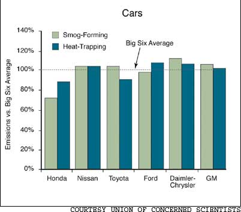

Green Gazette
The Genius of Wangari Maathai who received the 2004 Nobel Peace Price for her tree planting campaign in Kenya.Green Performance: Top Six Automakers Shift up and Down: Honda, Nissan, Toyota, Ford, Daimler/Chrysler and GM.More Evidence that Food Nutrient Quality is DecliningMonsanto Targets Fruit and VeggiesMonsanto currently controls 91 percent of the global genetically modified seed market.Low Rank in Environmental IndexThe US ranks 45th in the 2005 index of environmental sustainability.bioWilliwWillie Nelson is marketing biodiesel to truck stops.Kudos for Mother ContributorsCarol Mack and husband John Stuart won the 2004 Washington State Wildlife Steward of the Year Award
By the Mother Earth News editors
April/May 2005
The Genius of Wangari Maathai
Sprouts & Snippets
Low Rank in Environmental Index
The United States ranked 45th in the 2005 index of environmental sustainability, which rates nations on their success in addressing such issues as air quality, biodiversity and cooperation with other nations on environmental problems. The index, prepared by researchers at Yale and Columbia universities, studied 146 countries and picked Finland, Norway and Uruguay for the top three spots. The United States ranked behind most countries in Western Europe, Japan, Russia and some African nations. Visit www.yale.edu/esi for the full report.
BioWillie
Willie Nelson, the 71-year-old Texas music legend, also is an energy company executive. Nelson and three business partners formed a company called Willie Nelson’s Biodiesel that is marketing the fuel to truck stops. The clean-burning product called BioWillie is made from vegetable oils, mainly soybeans, and can be burned without modification in regular petro-diesel engines. Nelson’s company is negotiating with Oklahoma City-based Love’s Travel Stops and Country Stores to carry the fuel at its 169 locations nationwide. Go to www.wnbiodiesel.com for more information.
Kudos for Mother Contributors
Mother Earth News contributing editor Carol Mack and her husband, John Stuart, won the 2004 Washington State Wildlife Steward of the Year award for returning their 40-acre timberland to an old forest-type habitat. In Pennsylvania, Mother contributing editor George DeVault and his wife, Melanie, were named Farmers of the Year by the Lehigh County Conservation District, for their efforts to preserve the environment on their 20-acre organic farm
Low Rank in Environmental Index
The United States ranked 45th in the 2005 index of environmental sustainability, which rates nations on their success in addressing such issues as air quality, biodiversity and cooperation with other nations on environmental problems. The index, prepared by researchers at Yale and Columbia universities, studied 146 countries and picked Finland, Norway and Uruguay for the top three spots. The United States ranked behind most countries in Western Europe, Japan, Russia and some African nations. Visit www.yale.edu/esi for the full report.
BioWillie
Willie Nelson, the 71-year-old Texas music legend, also is an energy company executive. Nelson and three business partners formed a company called Willie Nelson’s Biodiesel that is marketing the fuel to truck stops. The clean-burning product called BioWillie is made from vegetable oils, mainly soybeans, and can be burned without modification in regular petro-diesel engines. Nelson’s company is negotiating with Oklahoma City-based Love’s Travel Stops and Country Stores to carry the fuel at its 169 locations nationwide. Go to www.wnbiodiesel.com for more information.
Kudos for Mother Contributors
Mother Earth News contributing editor Carol Mack and her husband, John Stuart, won the 2004 Washington State Wildlife Steward of the Year award for returning their 40-acre timberland to an old forest-type habitat. In Pennsylvania, Mother contributing editor George DeVault and his wife, Melanie, were named Farmers of the Year by the Lehigh County Conservation District, for their efforts to preserve the environment on their 20-acre organic farm
Except where noted, Green Gazette is written by Umut Newbury
The following article honoring Wangari Maathai, the 2004 Nobel Peace Prize winner, originally appeared in the International Herald Tribune - Mother
Several prominent Norwegians have questioned the Nobel Committee for awarding the 2004 Nobel Peace Prize to Wangari Maathai. Why honor environmental activism in an era when war, terrorism and nuclear proliferation are even more urgent problems, they wonder.
What they miss is Dr. Maathai’s special genius
The first time we met Maathai was five years ago in an airy guesthouse beneath towering Jacaranda trees on the outskirts of Nairobi. At the time, the Green Belt Movement she founded nearly 25 years earlier was still struggling against the ruthless political regime of President Daniel arap Moi.
As we then witnessed her movement in action at the village level, we felt privileged to get a taste of Maathai’s genius. National Public Radio commentator Daniel Schorr has said that Maathai may someday be seen as an African Mother Theresa. But, make no mistake, Maathai’s life is not about taking care of others. It is about something else
Maathai planted seven trees on Earth Day in 1977 to honor Kenyan women environmental leaders. Then, recognizing that deforestation could only be reversed if village women throughout her country became tree planters themselves, she launched the Green Belt Movement. Government foresters laughed at her idea of enlisting villagers; it took trained foresters to plant trees, they told her. Because Maathai didn’t listen, today Kenya has 30 million more trees.
Maathai’s genius is in recognizing the interrelatedness of our local-to-global problems and that they can only be addressed as citizens themselves find their voices and courage to act. Maathai saw in the Green Belt Movement’s tree planting both a good in and of itself and an entry point - a way in which women could discover they were not powerless in the face of autocratic husbands, village chiefs and a ruthless president. By creating their own tree nurseries - at least 6,000 throughout Kenya - and planting trees, women began to control their own firewood, an enormous power shift that also freed up time for other pursuits.
Then, through popular education, village women, who had watched the Moi regime use public forests to grant political favors, were galvanized to see the forests differently: as something to which they - as citizens - had claim.
Through the Green Belt Movement, village women also came to see that a narrow focus on export commodities, such as coffee, at the expense of environmentally appropriate food crops, was an inheritance of colonialism reinforced by International Monetary Fund policies.
That, too, they could change
Through a village food-security campaign, Green Belt members are learning to re-establish indigenous crops using organic methods and to reintroduce kitchen gardens - a skill many lost in the wake of government-promoted, export-oriented agriculture. Over the years, Maathai and members of the movement have been jailed and even beaten for their protests of government anti-environment actions.
One of the movement’s organic farming educators described to us how he was almost arrested for promoting sustainable agriculture. The government, it turned out, had lucrative contracts with major chemical agriculture companies; the teachers’ education was deemed a serious threat.
Throughout the movement’s history, Maathai also continued to expand her vision, seeing the interconnections among the disparate crises facing Kenyan villagers. She has become a leader in international debt relief efforts. By the time we traveled to Kenya in 2000, the Green Belt Movement had grown into a major pro-democracy force in the country.
In the lead-up to the 2002 Kenyan presidential elections, Maathai made a last-minute decision to run for a seat in parliament. She beat her opponent 50 to one. Women, we were told, danced in the streets of Nairobi for joy. A few weeks later, when President Moi stepped down after holding power for more than two decades, Maathai was appointed Deputy Minister of the Environment.
We last saw Maathai in May 2004 at an intimate gathering in New York City. She shared with the audience that she was collaborating on writing her country’s new constitution.
“We are working on a Bill of Rights, only ours,” she said with her irrepressible grin, “will include rights not only for human beings, but for animals and the environment.”
We flashed back to our time in Kenya when we saw many village women wearing the signature Green Belt Movement T-shirt. Its slogan never failed to stir us because it seemed to capture the heart of the matter. The T-shirt simply says: “As for me, I’ve made a choice.”
Thus, in selecting Dr. Maathai, perhaps the Nobel Committee wants us to recognize not the power of a global leader to bring peace to our world, but rather that the real hope for peace, both with each other and with the Earth itself, lies in the choices - individual and collective - of empowered citizens.
Bringing this insight to life is Wangari Maathai’s genius
- Anna and Frances Moore Lappé
Anna and Frances Moore Lappé are co-authors of Hope’s Edge: The Next Diet for a Small Planet, which is available from Mother’s Bookshelf [(800) 888-9098 or www.MotherEarthNews.com]. The book tells the story of the Green Belt Movement and other grass-roots democracy movements worldwide.
To learn more about Wangari Maathai’s campaign, go to www.greenbeltmovement.org. Maathai also is the author of The Green Belt Movement: Sharing the Approach and the Experience (Lantern Books, 2003)
More Evidence that Food Nutrient Quality is Declining
A new study has strengthened evidence that the nutrient content of conventionally grown vegetables and fruits has declined over the past 50 years. The study, published in the Journal of the American College of Nutrition, compared U.S.epartment of Agriculture data from 1950 and 1999 for 13 nutrients in 43 crops. After rigorous statistical analysis, the researchers found that, on average, all three minerals evaluated have declined; two of five vitamins have declined; and protein content has dropped by 6 percent.
The researchers hypothesize the declines may be caused by “decades of selecting food crops for high yield, with resulting inadvertent trade-offs of reduced nutrient concentrations.” They note that “for many decades agronomists have cited ‘the dilution effect’ to describe reduced nutrient concentrations caused by intensive agricultural practices. For example, when fertilization is adjusted to maximize yield, the harvest weight and dry matter may increase more rapidly than the accumulation of nutrients.”
So how can such deterioration in our food quality be reversed? This study’s authors (from the University of Texas in Austin and the Bio-Communications Research Institute in Wichita, Kan.) suggest “we would need to consider older, lower-yielding cultivars, or attempt to develop new varieties selected for both high yield and high nutrient density.” Many gardeners have already discovered that older heirloom varieties often have better flavor than newer high-yielding hybrids. Now this study suggests that in many cases, the older varieties may also be more nutritious. And despite these troubling declines in nutrient content, vegetables and fruits are still far better for us than the white flour and rice, refined sugars and added fats that are so dominant in typical American diets
To learn more about the nutrient decline of our food supply, see “Is Agribusiness Making Food Less Nutritious?” in Mother’s Amazin’ Archive at www.MotherEarthNews.com
- Cheryl Long
[Source: “Changes in USDA Food Composition Data for 43 Garden Crops, 1950 to 1999,” Journal of the American College of Nutrition, Vol. 23, No. 6, 2004.]
Green Performance: Top Six Automakers Shift up, Down
Honda stands out as the automaker most consistently committed to improving the environmental performance of its vehicles. General Motors, however, is on a reverse course - becoming the worst major automaker in terms of pollution and fuel economy. A report from the Union of Concerned Scientists (UCS) details such environmental highlights and lowlights from the fleets of the largest automakers in the U.S. market - DaimlerChrysler, Ford, GM, Honda, Nissan and Toyota. The study aims to help the public sift through these companies, which account for nine out of 10 vehicles sold in the United States, and discover “which one is truly the greenest when the rubber meets the road.”
The report analyzes government data on model year 2003 (MY03) vehicles (the most recent year for which all information was available) to rank each automaker’s overall performance in two categories: smog-forming pollution and emissions that exacerbate global warming. Overall, the industry continues to improve on the former, while stalling on the latter.
Honda’s continued progress in reducing emissions, particularly among its trucks, extended its lead in the UCS rankings. More than half its vehicles now meet federal emission standards that won’t be in place until 2007.
Nissan rose to second place with the industry’s best improvement in global-warming emissions and by certifying all of its vehicles to California’s strict smog pollution standards.
Toyota remains an industry leader with better than average pollution and emissions, but slipped to third because it did not keep pace with Nissan’s enhancements.
Ford’s improvements in smog-forming pollution were second only to Honda. But UCS described the fourth-place automaker’s environmental efforts as confusing and self-contradictory - Ford’s fleet has the industry’s worst global-warming emissions, and the company abandoned its commitment to improve its sport utility vehicles’ fuel economy 25 percent by 2005.
DaimlerChrysler’s fleet maintains pollution and emission levels worse than the industry average, but climbed in the rankings due to a modest improvement in the fuel economy of its trucks.
GM has fallen in each successive UCS report, from fourth place overall for 1998 vehicles to last place for MY03. Unlike other manufacturers, the environmental performance of GM’s vehicles regressed - its MY03 fleet produces more pollution and emissions than those from 2001.
U.S. passenger vehicles create one-fifth of the nation’s smog-forming pollution and produce more global-warming emissions than most other nations emit from all sources combined. Consumers can encourage automakers to embrace their environmental responsibility by selecting the cleanest, most efficient car or truck that meets their needs.
Visit www.ucsusa.org/clean_vehicles for the full report
- John Rockhold
Monsanto Targets Fruit, Veggies
Agricultural biotechnology giant Monsanto announced in late January that it will buy Seminis, the world’s largest producer of fruit and vegetable seeds.
The acquisition makes Monsanto the largest supplier of vegetable seeds. Before the sale, Monsanto already controlled 91 percent of the global genetically modified (GM) seed market, focusing on corn, soybeans and cotton
In 2004, farmers successfully opposed Monsanto’s GM wheat initiative for fear that it would hurt exports and contaminate seed stocks. The company’s chief executive, Hugh Grant, downplayed the purchase of Seminis as a part of Monsanto’s effort to expand GM crops. However, some organic farming advocates fear the company may push for GM vegetables and fruits while the Food and Drug Administration’s GM regulations are still lax. Under current rules, Monsanto can market new GM crops without notifying the agency, unless the product contains a known allergen or its nutrient value is significantly altered
Go to www.thecampaign.org for more information about Monsanto’s genetic-engineering history worldwide
 The Green Belt Movement, foundedby Wangari Maathai, the 2004 Nobel Peace Prize winner, has planted 30 million trees across Africa since 1977. |
 |
|